exp/lotus-medallion — twelve treatments of one concept
Founder's brief: top view — a 12-petal lotus at the centre, a circle of 12 medallions —
artistic, abstract. Same geometry canon under all twelve (grid.json: 30° spokes, medallion ring at
0.92R, vertical axis through a petal tip); what varies is the register: solid vs stroke, medallions as
beads / suns / rings / points, aligned vs 15°-offset, rimmed vs floating, positive vs negative space.
Every centre dot is the linga seen from above — the brand bindu. Strips: 64/32 px reduction; indigo
tile = night colorway (ivory+gold).
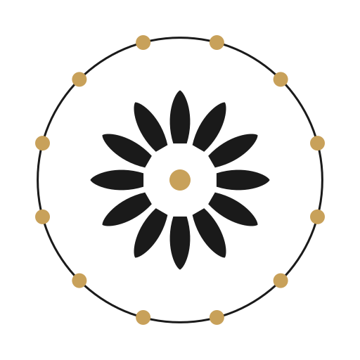
6432
1 · mala — Beads on the thread — the medallion ring as a japamala; gold beads on an ink rim.
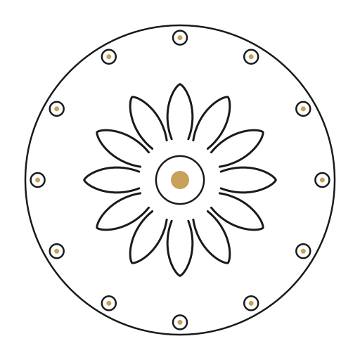
6432
2 · engraved — Ceremonial control — fine-stroke court, dot-in-ring suns; closest to the murti drawing.
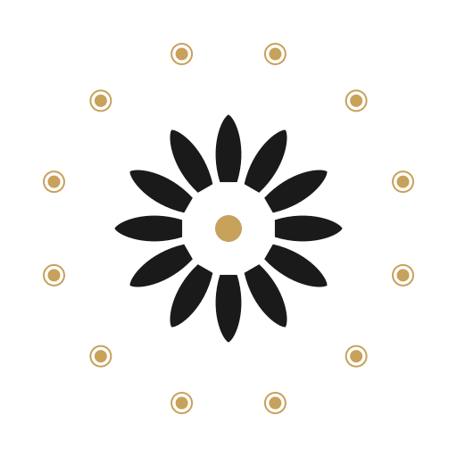
6432
3 · suncourt — Floating Adityas — disc-and-corona suns, no rim; the whitespace is the water.
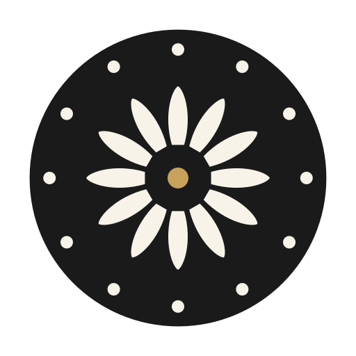
6432
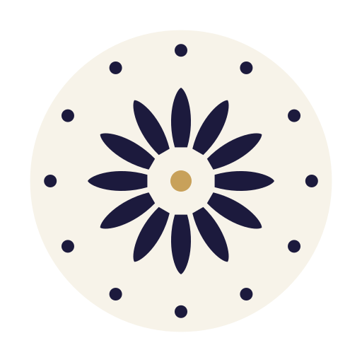
4 · counterseal — Negative space — lotus and medallions punched out of a solid disc; stamp / app-icon.
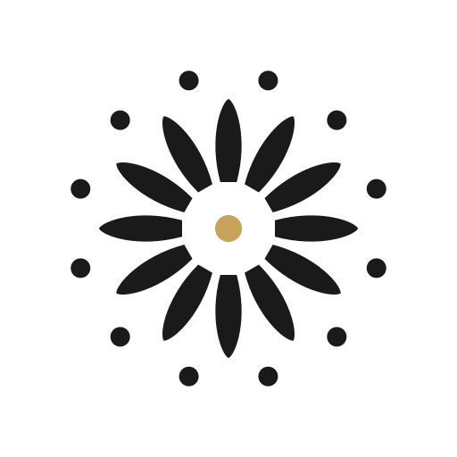
6432
5 · interleave — The 24 reading — petals and medallions interleave: 24 tattvas around the centre.
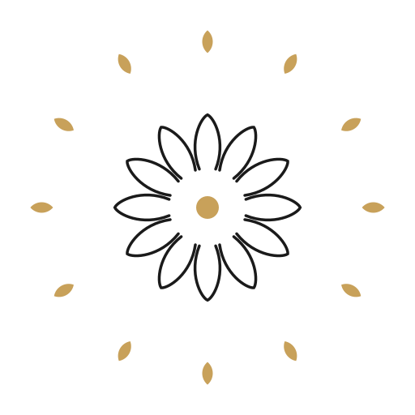
6432
6 · halo — Wide water — a small quiet lotus, a far halo of gold petal-points.
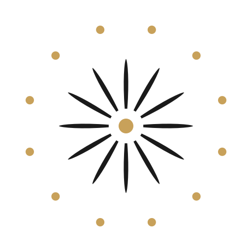
6432
7 · raywheel — Most abstract — petals as tapered rays; the rta-chakra as pure motion.
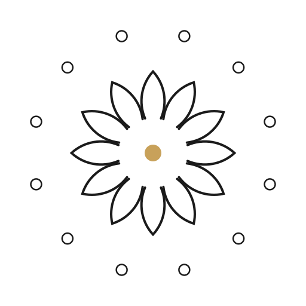
6432
8 · archway — Temple-arch petals — each petal cut from two meeting arcs; ring medallions.
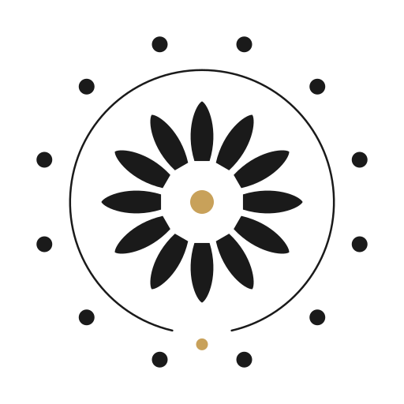
6432
9 · nalicourt — The index — water arc broken at the nali, the gold drop returns below.
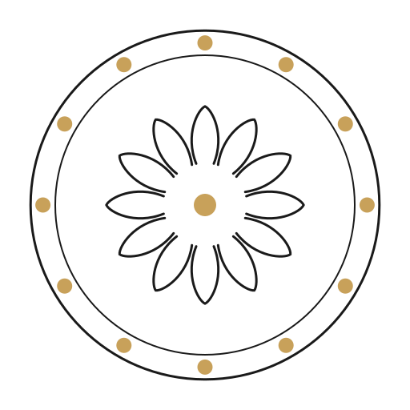
6432
10 · orbit — The water band — double rim holds the suns; outline lotus keeps it a seal.